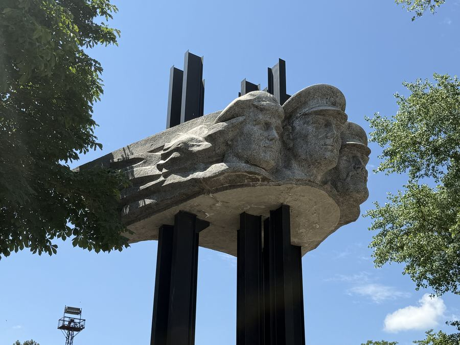
01 / 15
War Memorial
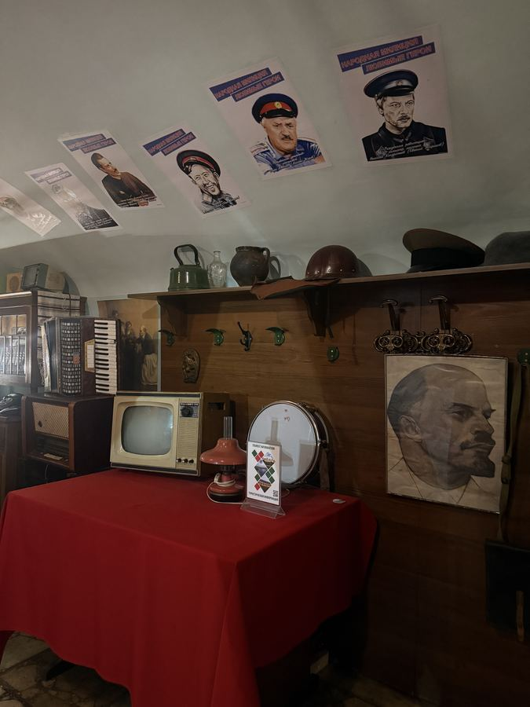
02 / 15
USSR Cantine
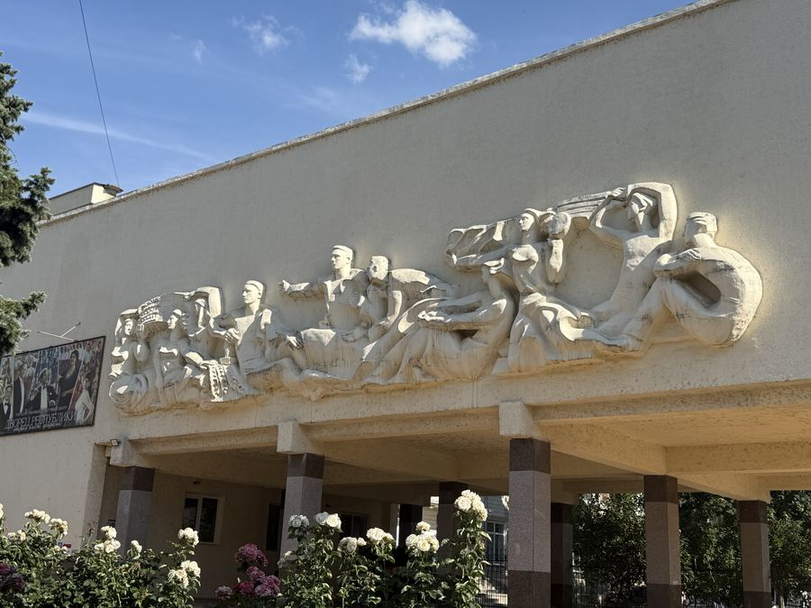
03 / 15
Palace of the Republic

04 / 15
Pridnestrovian Government
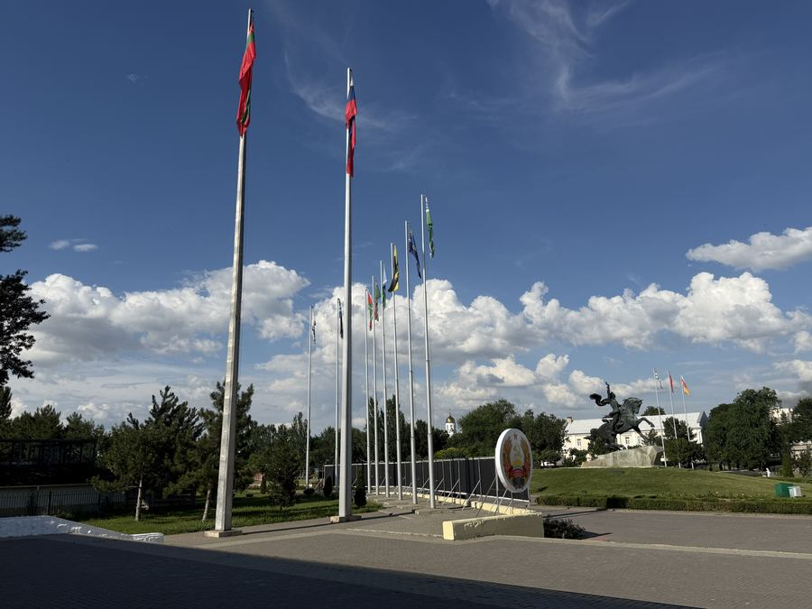
05 / 15
Suvorov Square
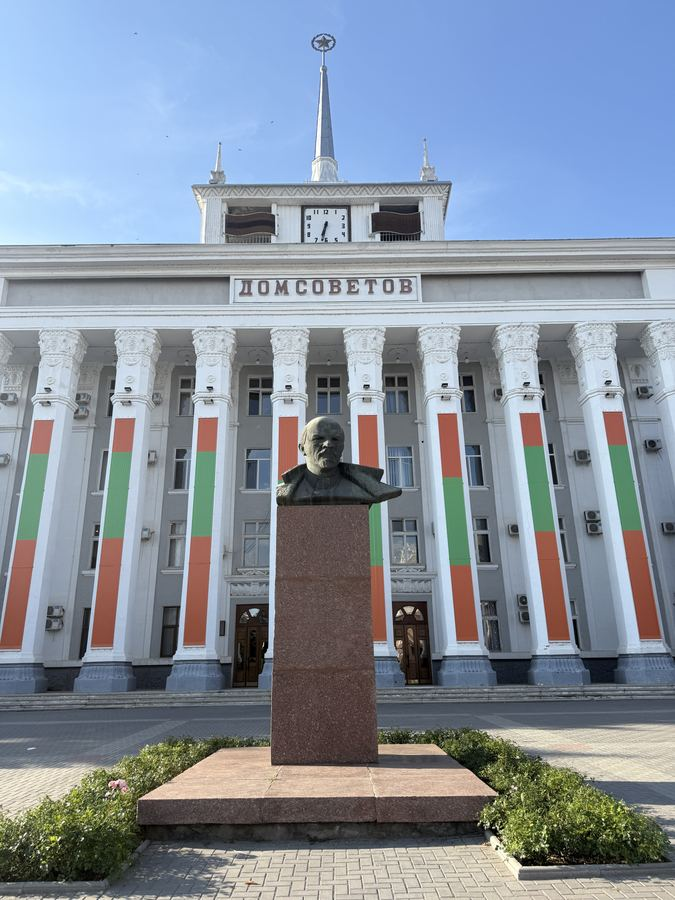
06 / 15
Tiraspol City Hall
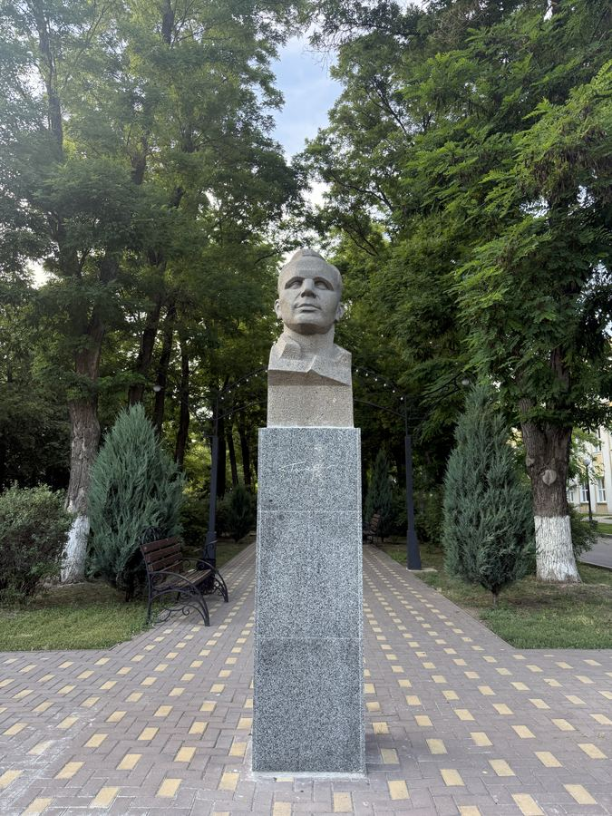
07 / 15
Gagarin Monument
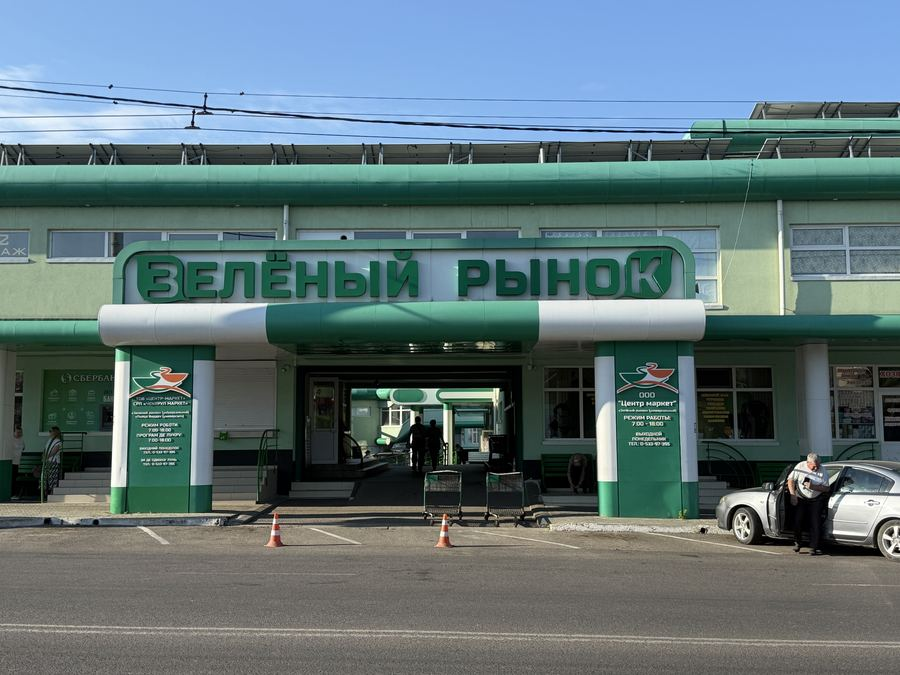
08 / 15
Green Market
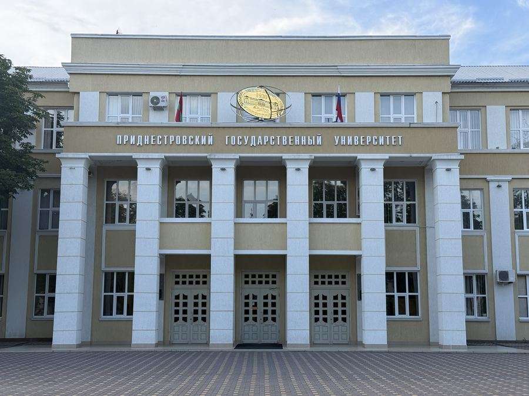
09 / 15
Transdniestrian State University
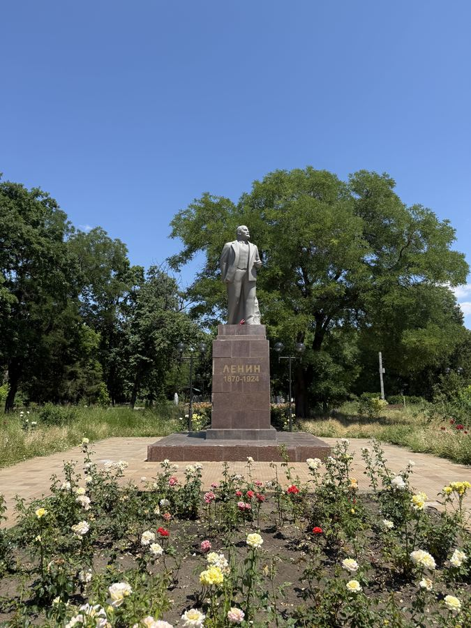
10 / 15
Comsomol Park & Lenin Monument
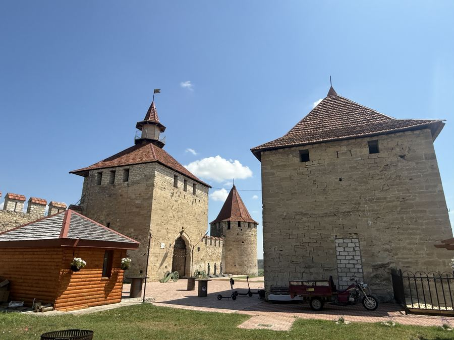
11 / 15
Bender Fortress
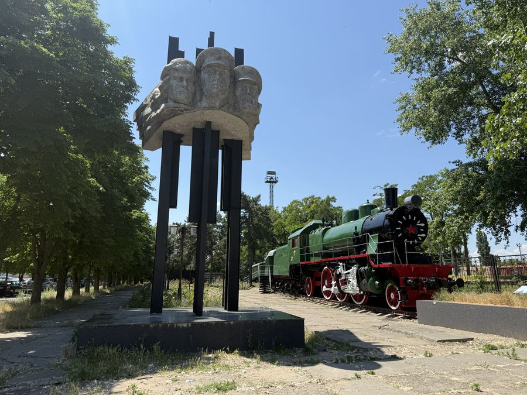
12 / 15
Bender Train Station
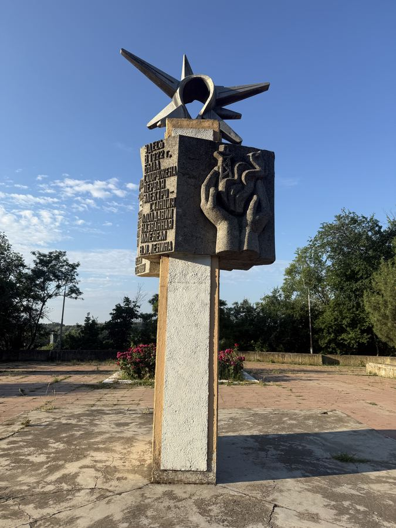
13 / 15
Monument at the Power Plant
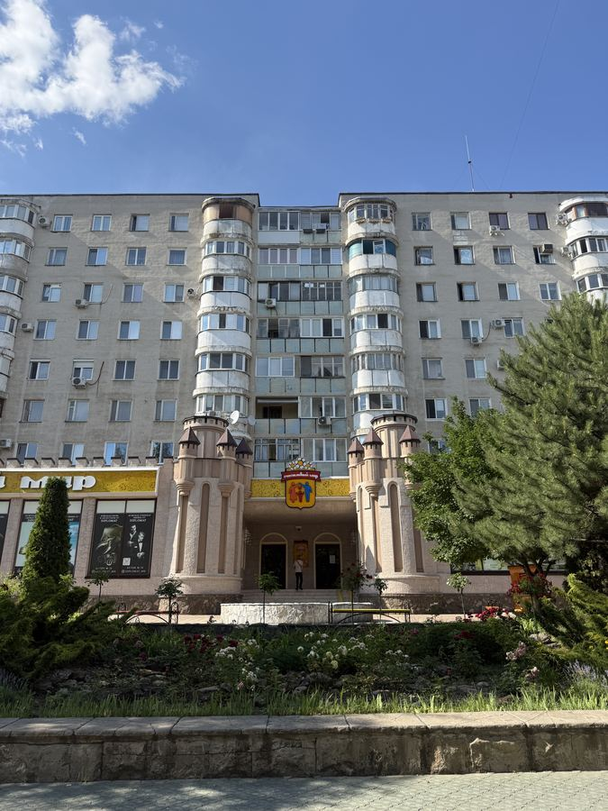
14 / 15
Soviet Residential Buildings
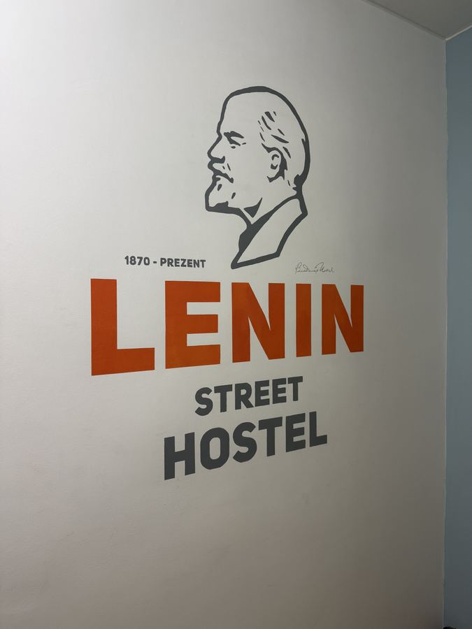
15 / 15